Kane lives!
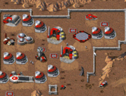
Олдфаг уронил скупую слезу
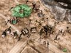
За 12 лет изменилась только внешняя оболочка.
Command & Conquer (сокр. C&C, рус. «Командуй and Покоряй», «Набигай @ Огробляй») — серия стратегий в реальном времени всех времен и народов. Основа сюжета — альтернативная история конца XX — середины XXI века. Международная организация GDI и братство Nod ведут эпическую борьбу за новый драгоценный ресурс, тиберий. Их взгляды на всемирно-историческую роль тиберия совершенно непримиримы! В третьей части игры прилетают ещё и пришельцы. Вместе с Дюной и всеми спиноффами идеологически противостоит Близзардовским Вар- и Старкрафтам.
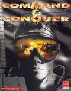
Суровый воин тибериумных войн!
Первая игра C&C является одной из основополагающих игр своего жанра. Развив заложенные в Dune 2 идеи, игра сформировала отдельное «течение» в RTS. Мем игрожура «C&C-клон» означает УГ в жанре RTS, но не потому что сабж — УГ, а потому, что копировать фичи Ц&Ц модно и стильно. Кстати, «Варкрафт-клон» означает то же самое.
Заслуги первого C&C в развитии жанра
Игра как бы относилась к реально реальному времени (то есть примерно здесь и примерно сейчас), а не каким-то там планетам Арракисам или эльфооркам, и поэтому имела претензию на некоторую «реалистичность». И тут обнаруживается, что обзавестись солдатом стоит как построить пол-электростанции, а то и целую, танк — как две, а вундервафля стоит как электростанция и танковый завод вместе взятые. Причём, на тренировку войск или постройку баз требуются сущие секунды. В реальной жизни МинОбороны бы уже сделало суицид. Такую дичайше упрощённую экономическую «модель» стали применять чуть менее чем во всех RTS и даже назвали в честь игры, сделавшей её популярной — «Command And Conquer Economy».
В стремящихся к «реализьму» RTS, не желающих заморачиваться со сложной экономикой, используется простая отмазка, существовавшая ещё в первой C&C (при игре за NOD): вместо тренировки или постройки прямо на поле боя, заранее отстроенные юниты какбэ доставляются туда по заказу.
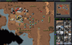
Вся орда под контролем!
Тут же и боковая панель.
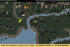
GDI Commando: Keep ’em coming!
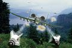
Кадр из видео, GDI нападает!
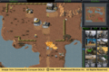
А в игре это выглядит примерно так.
Серия доставляет сама по себе, потому и заслужила свою уютненькую статью. Внимание, клюква!
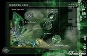
Химическая составляющая
Классический хуйдостаний, из-за которого весь сыр-бор. Единственный вид ресурсов в C&C. Неведомая зеленая(синяя) хуйня, прилетевшая на метеорите. Назван в честь реки Тибр, куда упал метеорит (версия GDI) или лично Кейном в честь римского императора Тиберия (версия Nod).
Суть: инопланетный минерал-растение (!), очень ценен (высасывает из почвы сотни полезных ископаемых), но ядовит. Синий тиберий ценен вдвойне, но еще и сука взрывоопасен. Люди на тибериумных полях постепенно дохнут — если повезёт. Те, кому повезло меньше, превращаются в зомби (висцероид) и принимаются жрать своих бывших товарищей. Тибериум разрастается и делит Землю на ноль, по некоторым данным, преобразует в интересах пришельцев. После C&C 2 появляется деление Земли на зоны:
Оказывается, тибериум упоминался в других играх Westwood Studios. Возможно как пасхальное яйцо. Например в игре Legend of Kyrandia есть момент, когда принц Брендон попадает в пещеру, полную тибериума. И самое интересное, что ему насрать на радиацию — он же прЫнц.
Так же в виде толстой пасхалки имеется в Kings' Bounty — в подземельях растут огромные кристаллы сабжа.
Алсо, в SimSity 4 есть некоторая вероятность, что один из ваших заводов из индустриальной зоны будет принадлежать компании Tiberium Inc.
Однако и в The Sims 3 был замечен как ископаемый камень.
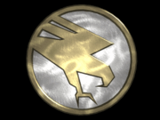
Эмблема ГСБ
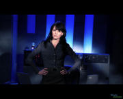
Доктор Кэмерон ведет консультацию
GDI — Global Defense Initiative (рус. ГДИ — Глобальная Доктрина Империализма (в реале не переводится никак, это транслит), ГСБ — Глобальный Совет Безопасности, СОИ — Совместная Оборонная Инициатива, ГОИ — Глобальная Оборонная Инициатива) — организация налаживания мира, всемирная армия при ООН. Борется с происками братства Nod, пытается сохранить и обезопасить зеленый уголок (в смысле растений) от распространения зелени (уже тибериум). Многократно превосходит NOD в грубой силе, прочности юнитов и унылости командного состава. Но это не спасает от хитрожопых фанатиков.
ГСБ сконцентрировано на территории бывших «странах золотого миллиарда», в основном, в синих зонах. Главный штаб располагался на космической станции «Филадельфия», пока ее не взорвали. Во главе ГСБ стоят унылые такие генералы и полковники. В C&C 3 появляются фапабельные девушки-лейтенанты (д-р Кэмерон и Сайлон #8 — Дженнифер Моррисон и Грейс Парк соответственно). В Tiberian Sun (Firestorm) была также Dr. Gabriella Boudreau, которая тоже весьма-весьма.
Изначально в серии их оружие — традиционное, в противовес футуристичным Нодам: балистическое, ракетное, танчики, крейсерка… Но потом они также сдвигаются в сторону SciFi и у них появляются всякие призматанки и шагающие мехи. Что, сука интересно, в первой части лазеры, как основная фишка были у Нодов, а потом Ноды взяли на вооружение всякие бесчеловечные токсины, а лучемёте стали фишкой Гдяев — но не злые красные лазеры, а пречистые белые лучи добра. Алсо, аналоги Мамонт-танка, по традиции, оружия плохих парней, встречается тут и у них. Фактически войска GDI и тактика их использования олицетворяют саму организацию - гигантский отлаженный механизм с защитой от дурака, неповоротливый, но очень мощный.
Внезапно появляется Кейн и Братство Нод начинает буянить. Храбрые воины ГСБ гоняют их ссаными тряпками по всему миру. Наконец, они находят Главный Храм Нод и выносят его вместе со спрятавшимся там Кейном.
Каждая следующая часть начинается с того, что Кейн внезапно воскрес и собрал воедино Братство, впавшее после его исчезновения в раскол и упадок. Потом повторяется то, что описано в первом абзаце.
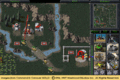
Последний бой — он трудный самый!
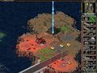
И во второй раз тоже.
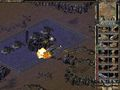
Это уже Firestorm.
Песец тупой железяке!
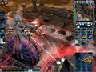
Мамонты-мамонты, рвутся напролом!
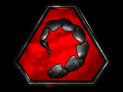
Эмблема Nod
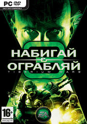
Nod — The Brotherhood of Nod (рус. Нод, братство Нод) — темная и таинственная организация, международное религиозно-террористическое братство. Вечно нападает на ГСБ, пытается с помощью тибериума построить светлое будущее. Многократно превосходит ГСБ в маневренности, партизанской тактике, эпичности персонажей и конструкторских лулзах вундервафель.
Nod рассредоточено по странам третьего мира, в основном, в желтых зонах. Главный Храм заныкан подальше от ГСБ (но они все равно находят и выносят), обычно в Сараево, в C&C 2 в Каире. Возглавляет Nod эпический злодей по имени Кейн. Всякий сброд, от искусственных интеллектов (сначала CABAL, потом LEGION) до самого Чёрного Властелина (пруфлинк) и фапабельной Cylon Number Six, всегда рад предать Кейна и устроить раскол в Братстве, а потом стать жертвой изнасилования и/или сдохнуть.
Ввиду своей малочисленности Ноды делают упор на эффективность оружия, как это пытались фошысты во время ВоВ. Их оружие почти целиком составляют вундервафли и всякое «подлое» хитро-плановое пневмопихающе. Недостаток персонала компенсируют киборгами и роботами. Ну ты понел. На самом деле малочисленности у Братства не наблюдается, так как вербуют они людей в желтых зонах, а GDI там не очень-то любят. Другое дело, что обеспечить уровень подготовки и вооружения, как у рыцарей демократии, НОД не может (ихние сумрачные гении предпочитают тратить сотни нефти на всякие реактивные тибериумометы), поэтому одновременно включает в себя и толпы голодного быдла, цель которого - умереть на баррикадах во славу Кейна, и несколько убер-коммандос, экипированных девайсами, которые GDI и не снились. Бронетехника, как уже сказано выше, представлена разного рода вундерваффлями, работающими по принципу "набижали, сгрызли все, что не приколочено, дали деру, пока 100500 тяжелых танков GDI не навешали неиллюзорных"
Kane lives!
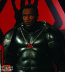
Черный Властелин.
Кейн придумал хитрый план, и Братство Нод начинает пинать GDI по самым чувствительным местам. Захватывает коды запуска ионной пушки, например. Потом торжественно возводят Главный Храм и план приводится в исполнение.
Каждая следующая часть начинается с того, что ничего этого не было, в прошлый раз победили GDI, причём они убили Кейна, Братство впало в раскол и ничтожество. Внезапно Кейн вернулся — и дальше то, что описано в первом абзаце.
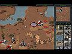
Братство в двух шагах от победы!
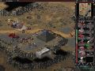
Предателям нет пути!
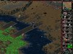
Good night, Sweet AI.
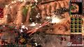
Сдохните, отступники!
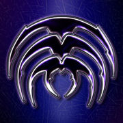
Эмблема скринов
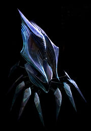
МН0ГОНОГ!1
Скрины (англ. Scrin, к скриншотам отношения не имеет) — расовые инопланетяне из C&C 3. Их интересует только тибериум (они же его и занесли на Землю), который они активно используют в своих нанопродвинутых технологиях. По конструкции — какие-то инсектоиды и биомеханоиды. Отличаются крайне оригинальным дизайном и несокрушимой мощью воздушного флота. Алсо, если названия ГСБшных и НОДовских юнитов, ввиду своего все же земного происхождения, запоминаются легко и ненавязчиво, то инопланетных "анигиляторов", "дезинтеграторов" и прочих "фалоиметаторов" хрен запомнишь — и названия непонятные, и на рожу все одинаковые, иногда даже не понятно сразу, пихотинец перед тобой или техника.
Скрины действуют в основном в красных зонах. На Земле надмозг расположен в красной зоне в Италии, около места падения тибериумного метеорита. В отличие от зергов, сверхразумом управляются только безмозглые и низшие существа.
Впервые следы Скринов появляются в Tiberian Dawn в виде разбитой летающей тарелки валяющейся в недоступном месте на карте как деталь ландшафта. Получше ее рассмотреть и даже прогуляться по ней дали только в Command & Conquer: Renegade. При этом происхождение тарелок и присутствие их останков в этих играх никак не объяснялось, и их причастность к Скринам додумалось позже (по хронологии вселенной). В C&C 2 была уже не тарелка, а некий упавший космический корабль который своим дизайном был похож на будущих Скринов из C&C 3, но речи ни о какой будущей третьей стороне конфликта и тут не шло. И только в C&C 3 Скрины получили свое имя и запилили вторжение на землю.
К двенадцатой годовщине со дня выхода первого C&C сабж официально объявили фриварным, так что даже убежденные копирасты могут бесплатно приобщиться к классике. Выкачать можно, например, здесь: официальный сайт. Теперь без всяких там ключиков, даемонов и прочей хуйни, вы можете спокойно скачать C&C1 (с аддонами), C&C: Red Alert и C&C: Tiberian Sun (с аддоном). Возрадуемся же братья, ибо ЕА не стал страдать хренью и наживать врагов среди фанатов. Ждем Red Alert 2…
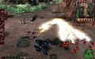
Kill it with fire!

Войска GDI готовятся громить Храм Нод в Сараево. Фанарт.
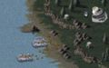
Ура-а-а-а!!!
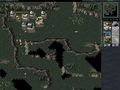
Развернули базу